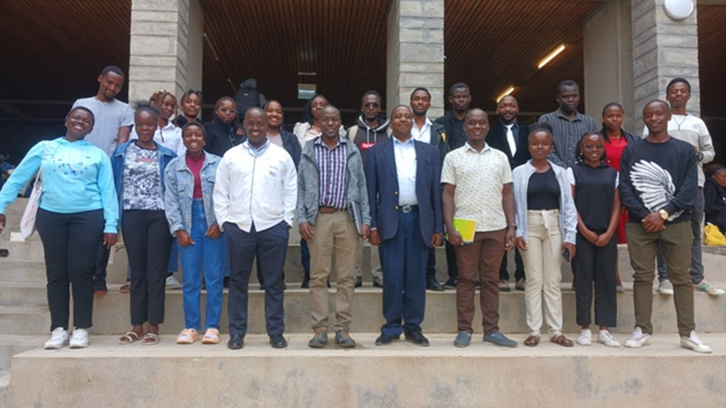

A community initiative with a simple belief: the people of Kericho should benefit from the beauty of Kericho.

Kericho Community Ecotourism is a programme of Inclusive Development Solutions (IDS) Self-Help Group, a community organisation based in Kericho County, Kenya.
IDS was formed by a small group of residents who believed that development should start with the people it affects. Over time, our work grew to focus on one of Kericho's greatest untapped assets: its potential as a destination for responsible, community-led tourism.
We saw visitors passing through the county on their way to larger attractions — and we saw local communities with stories, skills and landscapes that no one was telling them about. So we began mapping what we have, route by route, and building a way for visitors to experience Kericho properly.
To develop community-led ecotourism in Kericho County that conserves our natural and cultural heritage, creates income for local people, and offers visitors an authentic experience of our home.
A Kericho where every community benefits from the visitors who come to see it — and where every visitor leaves with a deeper understanding of who we are.
Building Kericho's ecotourism, step by step.
We identify and document cultural, agricultural, natural and sports sites across the county, then cluster them into routes that make sense for visitors and communities alike.
We establish clear arrangements with tea estates, museums, community groups and landowners — so visitors know what to expect and communities are properly compensated.
We connect visitors with self-help groups, artisans and small food providers along our routes, helping tourism income reach households directly.
Through this website, our social media and partnerships, we tell the story of Kericho to the world — on our own terms.
| Name | Role |
|---|---|
| Rosemary Rop | Board Chairperson |
| Brenda Chelangat Bii | Board Secretary |
| Joan Cherotich | Communications Manager |
| Sheila Chepkemoi | Website & Content Lead |
| Felix K. Rop | Member |
| Linet Korir | Member |
| Roy Kipngeno | Member |
| Betty Kirui | Member |
| Jacinta Cheruto | Member |
In 2026, we invited residents of Kericho County to design a logo for this programme. Of the 28 entries we received, one stood out.
It shows a single tea leaf — the symbol of our county — with its central vein turned into a winding gold trail. The trail represents the footpaths that communities in Kericho have walked for generations: between homesteads, grazing lands and markets.
Placing that path inside the leaf says something simple: when visitors come to Kericho, they are walking routes we have always walked. They are welcome on our trails.
Our colours are deliberately limited to two — Tea Green and Trail Gold — so that our identity can be reproduced affordably on signposts, certificates and uniforms for years to come.
We are grateful to the partners who have supported this programme.
Interested in partnering with us?
Contact Us